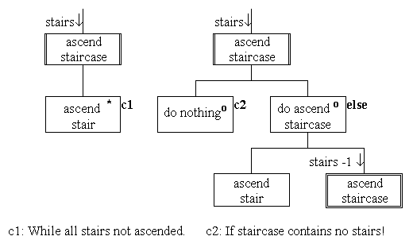

JSP recursion

The left hand diagram shows the action ascending staircase
as an iteration of ascending a stair. The diagram implicitly
regards a staircase as a (non-empty) iteration of single stairs.
The right hand diagram shows the same action
when considered recursively. Here a staircase is considered as an
empty staircase or a non-empty staircase. The non-empty staircase
is considered to be the first stair followed by the rest of the
staircase (which may be empty).
The recursive ascend staircase
action consists of doing nothing if the staircase is empty.
Otherwise the first stair is ascended and then the remaining
stairs are ascended by recursively calling the ascend staircases
action omitting the first stair. The recursive component is shown
in a double lined box.